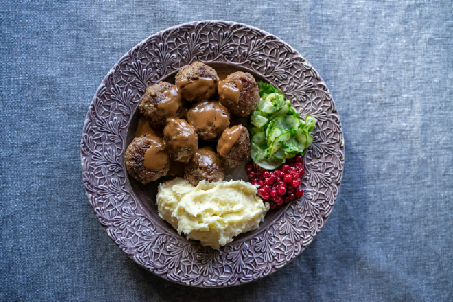

Swedish Meatballs
- 500g ground beef
- 150ml milk
- 75g white breadcrumbs
- 1 egg
- 1 onion
- salt, white pepper
- ground allspice
Brown gravy
- 2 tbsp butter
- 2 tbsp wheat flour
- 4 dl meat stock
- ½ dl double cream
- 2 tsp Chinese soy sauce
- 1 pinch black pepper

Swedish meatballs, or köttbullar, must be prepared, above all, with love. This is why homemade meatballs are a widespread concept in Sweden, and there are many different favourite recipes - with and without meat.
Steps
- Finely dice the onion and sauté gently in a little butter without browning. Soak the breadcrumbs in milk. Blend the ground meat, preferably in a food processor, with the onion, egg, milk-breadcrumb mixture and the spices to the proper consistency and taste. Add a little water if the mixture feels too firm.
- Check the taste by test-frying one meatball. Then shape small meatballs with the aid of two spoons and place on water-rinsed plates.
- Brown a generous pat of butter in a frying pan, and when it "goes quiet" place the meatballs in the pan and let them brown on all sides. Shake the frying pan often.
- For the gravy, melt the butter in a pan. Stir in the flour. Add the stock little by little, while stirring. Bring to the boil and simmer for 3-5 minutes. Add cream and flavour with soy, pepper and the optional apple sauce or jelly.
- Serve with mashed or boiled potatoes and raw stirred lingonberries.
Back to main page
Source: Sweden.se Meatballs